Material 表現 sample
もう少し凝った表現がしたい時の例を抜粋しました。
詳細は Material for MkDocs - Reference をご確認ください。
ハイライトテキスト
- This was marked
- This was inserted
This was deleted
```title=="Highlighting text"
- This was marked
- This was inserted
- This was deleted
## Admonitions
* Admonitions（警告）の表現方法は `!!! 文字列` と記述することで文章を目立たせる表現が簡単に導入できます。
### Inline blocks
!!! info inline
`inline`を指定すると左よりで表示
`inline end`を指定すると右よりで表示
Info
inlineを指定すると左よりで表示
inline endを指定すると右よりで表示
### Changing the title
!!! note "タイトルを変更します"
`!!! "タイトルを変更します"`のように記述します。
### Removing the title
!!! note ""
`!!! note ""`のように記述することでタイトルを削除します。
### Collapsible blocks
??? note
`??? note` のように記述することで折り畳み（デフォルト close）で表示されます。
???+ note
`???+ note` のように記述することで折り畳み（デフォルト open）で表示されます。
### Type
!!! Note
Noteを指定します。
!!! Abstract
abstract, summary, tldrを指定します。
!!! Info
info, todo を指定します。
!!! Tip
tip, hint, important を指定します。
!!! Success
success, check, done を指定します。
!!! Warning
warning, caution, attention を指定します。
!!! Failure
failure, fail, missing を指定します。
!!! Danger
danger, error を指定します。
!!! Bug
Bug を指定します。
!!! Question
Question を指定します。
!!! Example
example を指定します。
!!! Quote
quote, cite を指定します。
## Annotations
!!! Question
恐らく、開発中の機能...
## code block
### Adding a title
* コードブロックにタイトルを追加するには以下のように記述します。
* `title="bubble_sort.py"`
``` py title="bubble_sort.py"
def bubble_sort(items):
for i in range(len(items)):
for j in range(len(items) - 1 - i):
if items[j] > items[j + 1]:
items[j], items[j + 1] = items[j + 1], items[j]
Highlighting specific lines
- code block にハイライトを追加するには以下のように記述します。
hl_lines="2 3"
def bubble_sort(items):
for i in range(len(items)):
for j in range(len(items) - 1 - i):
if items[j] > items[j + 1]:
items[j], items[j + 1] = items[j + 1], items[j]
Adding line numbers
linenums="1"を記載
Content tabs
Grouping code blocks
- 複数のコードブロックを表現するには以下のように記述します。
=== "title"
- 以下のように画像でも可能です。（これは便利！）


Mermaid
yaml Sample
site_name: おもむろにメモ書き
site_url: https://omomuroni.github.io/
repo_url: https://github.com/omomuroni/omomuroni.github.io
theme:
icon:
repo: fontawesome/brands/git-alt
name: material
palette:
- media: "(prefers-color-scheme: light)"
scheme: default
primary: teal
accent: cyan
toggle:
icon: material/toggle-switch-off-outline
name: Switch to dark mode
- media: "(prefers-color-scheme: dark)"
scheme: slate
primary: cyan
accent: teal
toggle:
icon: material/toggle-switch
name: Switch to light mode
features:
- content.code.annotate
- content.tabs.link
- navigation.tabs
# - navigation.tabs.sticky # スクロールしてもタブ表示
- navigation.top # top み戻るボタン
- search.highlight
- search.suggest
- search.share
extra:
font:
text: "Noto Sans JP"
code: "Consolas"
search:
language: "en, ja"
plugins:
- search # default enable
# pip install mkdocs-git-revision-date-localized-plugin 必要
- git-revision-date-localized:
type: custom
custom_format: "%Y/%m/%d %H:%M"
timezone: Asia/Tokyo
exclude:
- index.md
markdown_extensions:
- def_list
- pymdownx.critic
- pymdownx.caret
- pymdownx.keys
- pymdownx.mark
- pymdownx.tilde
- pymdownx.betterem
- footnotes # 脚注
- tables # テーブル
- admonition
- pymdownx.details
- attr_list
- md_in_html
- abbr
- pymdownx.superfences:
custom_fences:
- name: mermaid
class: mermaid
format: !!python/name:pymdownx.superfences.fence_code_format
- pymdownx.highlight:
anchor_linenums: true
# linenums: true # code block に 行番号の追加
- pymdownx.inlinehilite
- pymdownx.snippets
- pymdownx.tabbed:
alternate_style: true
- pymdownx.emoji:
emoji_index: !!python/name:materialx.emoji.twemoji
emoji_generator: !!python/name:materialx.emoji.to_svg
extra_css:
- https://unpkg.com/mermaid@9.0.0/dist/mermaid.css
- custom/custom_table.css
- custom/layout.css
extra_javascript:
- https://unpkg.com/mermaid@9.0.0/dist/mermaid.min.js
copyright: © 2022
custom_table.css
/* 基本的なテーブル */
table.basic_table{
table-layout: auto;
width: 100%;
border-collapse: collapse;
border: 1px solid #b7b7b7;
text-align: left;
}
table.basic_table th {
border: 1px solid #b7b7b7;
background-color: DarkTurquoise;
text-align: left;
padding: 3px 8px;
margin: 3px 8px;
font-weight: bold;
}
table.basic_table td {
border: 1px solid #b7b7b7;
text-align: left;
padding: 3px 8px;
margin: 3px 8px;
}
table.basic_table caption{
padding: 3px 8px;
margin: 3px 8px;
}
/** 罫線なし・list用 table */
table.list {
table-layout: auto;
width: 100%;
border: none;
}
table.list th {
border:none;
text-align: left;
padding: 3px 8px;
margin: 3px 8px;
font-weight: bold;
}
table.list td {
border:none;
text-align: left;
padding: 3px 8px;
margin: 3px 8px;
}
table.list caption {
font-weight: bold;
text-align: left;
}
/* caption tag の前に改行をいれて間隔調整 */
table.list caption::before{
content: "\A" ;
white-space: pre ;
}
layout.css
/* mkdocs 基本的な装飾 */
/* 見出し */
h2 {
border-bottom: 2px solid teal;
}
/* 見出しに改行を追加して間隔を調整 */
h2::before {
content: "\A" ;
white-space: pre ;
}
h3::before {
content: "\A" ;
white-space: pre ;
}
h4::before {
content: "\A" ;
white-space: pre ;
}
/* 段組 */
#columns {
column-count: 2;
}
Last update:
2022/07/19 13:58